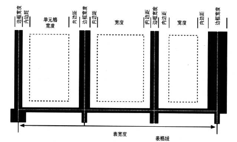

表单元格边框
合并单元格边框
- display值为table或inline-table的元素不能有任何内边距，不过它们可以有外边距。因此，表的外围边框与其最外单元格的边界之间不会有任何间隔。
- 边框可以应用到单元格，行，行组，列和列组。表元素本身都有一个边框。
- 单元格边框之间绝对不会有任何间隔。实际上，如果边框相邻，就会相互合并，使得实际上只画一个合并边框。
- 一旦合并，单元格之间的边框会在单元格间的假想表格线上居中。
合并边框布局

边框合并
如果两个或多个边框相邻，它们会相互合并。实际上，并不是完全合并，而是看哪一个在其它边框中占上风。哪些边框会胜出，哪些边框会合并，有以下规则:
- 如果某个合并边框的border-style为hidden，它会优先于所有其他边框。
- 如果至少有一个合并边框的border-style值不是none，而且所有合并边框的border-style值不是hidden，则窄边框不敌更宽的边框。如果多个合并边框都有相同的宽度，则会考虑边框样式，顺序如下：double、solid、dashed、dotted、ridge、outset、groove、inset。因此如果两个边框宽度相同，一个是dashed边框，一个是outset边框，则边框将是dashed。
- 如果合并边框的样式和宽度都一样，但是颜色不同，则按下列顺序使用元素颜色:cell、row、row group、column、column group、table。
| 1-1 | 1-2 |
1-3 | 1-4 |
| 2-1 | 2-2 |
2-3 | 2-4 |
| 3-1 | 3-2 |
3-3 | 3-4 |
| 4-1 | 4-2 |
4-3 | 4-4 |